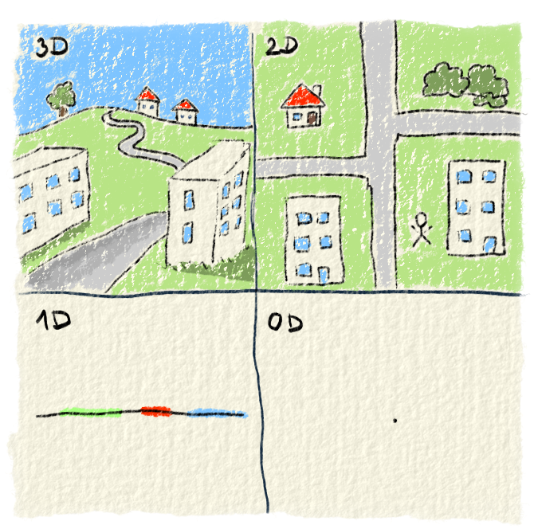

Analytická geometria, rovnako ako normálna geometria pracuje s rôznymi objektmi, ktoré sú v nejakom priestore. My žijeme v trojrozmernom priestore. Máme šírku, hĺbku a výšku. Okrem nášho trojrozmerného priestoru si vieme predstaviť dvojrozmerný, jednorozmerný a nula rozmerný priestor. Dvojrozmerný priestor má iba šírku a výšku, nemá hĺbku. Môžeš si to predstaviť tak, že si na papier nakreslíš svoj vlastný svet. Ľudia v ňom sa budú môcť hýbať iba doprava, doľava, hore a dole. Dozadu a dopredu nebudú môcť ísť. Jednorozmerný priestor je iba priamka. Na nej by vymyslený ľudia mali iba šírku, výšku už nie. Mohli by sa hýbať iba doprava a doľava. Nula rozmerný priestor je iba bod, nemá ani šírku, ani hĺbku, ani výšku. Ľudia v ňom by sa nemohli hýbať nikam.

Obr. 1.: Tu je pokus ukázať ti rôzne priestory. 3D priestor je náš svet. Má hĺbku, šírku a výšku. 2D priestor je plocha. Má šírku a výšku. 1D priestor je priamka. Má iba šírku. 0D priestor je bod. Nemá žiadny rozmer.
Rozmery označené písmenom D si už určite videl (napr. 3D kino). Označenie pochádza z anglického dimension, čo znamená rozmer. V matematike sa priestor označuje πx. Za x sa dosadí rozmer. Tak napríklad trojrozmerný priestor sa označuje π3.